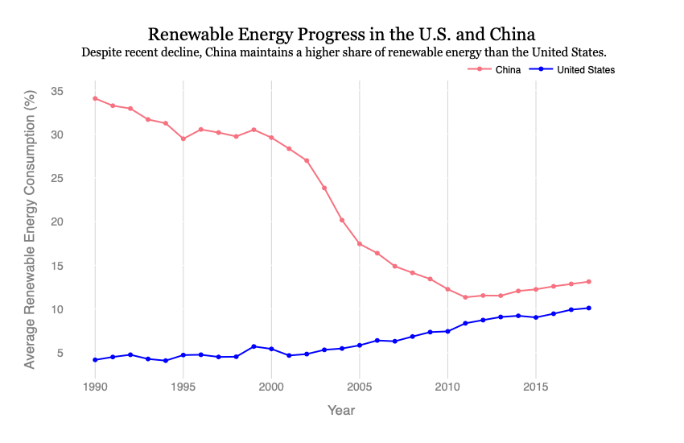
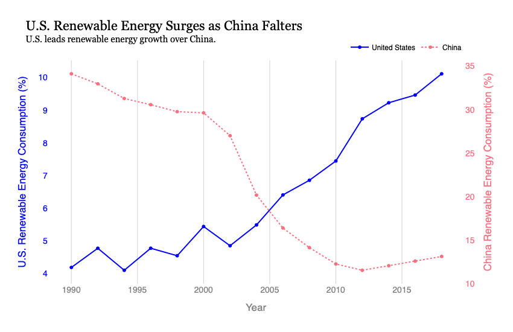

Proposition: Despite recent declines, China remains ahead of the U.S in renewable energy consumption.
FOR the Proposition

Design Decisions and Rationale:
- Unified Y-Axis — Score: 2
- Both lines are plotted against the same axis, allowing the viewer to see an unfiltered view into the progression of both trends. This decision allows either trend to not be exaggerated.
- Consistent and Granular Time Scale — Score: 1.5
- All available yearly data points are shown, including years where progress was flat or reversed. This gives an honest representation of each country’s renewable energy journey.
- Neutral Title and Subtitle — Score: 2
- The title avoids emotionally-charged language and taking a stance. The subtitle only tells the reality in neutral language–that China still has a higher share of renewable energy than the U.S.
- Color Choice for Visual Equity — Score: 2
- Both countries are represented with equally saturated colors (red and blue), with no deliberate emphasis through thickness or contrast. This ensures user interpretation rather than forced persuasion.
AGAINST the Proposition

Design Decisions and Rationale:
- Dual Y-Axis — Score: -1.5
- By using a dual-axis plot, each country is scaled independently, making the U.S. line appear significantly steeper and greater than a shared scale. Since the scales are in different colors as well, the China axis is less noticeable.
- Every 2-Year Filtering – Score: -1.5
- I omitted every other year of data to remove the granular volatility and make the increasing and decreasing trends, for the U.S. and China respectively, more smooth but extreme.
- Loaded and Charged Title and Subtitle — Score: -2
- Using charged phrasing like “surges” and “falters” directs viewers to a specific narrative that the United States is better than China in renewable energy. The subtitle implies a reversed leadership, which is actually not the case.
- Color Contrast and Manipulation — Score: -2
- By contrasting a thicker, saturated blue line for the U.S. with a thinner, dotted, and lighter pink line for China, the visualization draws the viewer’s attention away from the deceptive dual axis and reinforces a dominating U.S trend.
Final Reflection
My first step in this project was actually deciding on a proposition. After exploring the data extensively, I became inspired by the propaganda-type visualizations that are deceptive and politically-charged to further the glory of one country. Therefore, I landed on the comparison of the U.S. and China, two notorious rivals, in the renewable energy space. For both graphs, I used the climate dataset from the World Bank, filtering it to only include the U.S. and China, and grouped by ‘Year’ and ‘Country Name’. This allowed me to focus my analysis on a clear proposition: Is the U.S. better than China in renewable energy usage?
The first graph was straightforward in creating a visualization that neutrally depicts each country’s trend without exaggeration or deceptive techniques. In being transparent and natural, this graph was earnest at telling the situation at hand and leaving interpretation to the viewer. The second graph was more difficult in trying to manipulate the data points and employing visual strategies to argue the opposite viewpoint. I first filtered the data to only include data points of every other year for exaggerated trends. I utilized dual axes and a contrasting color duo to distort the framing and make the U.S look better. Initially, it felt impossible to visualize the opposite viewpoint with the same data. However, upon finishing the second graph, I was surprised at how natural and convincing my graph was, despite visualizing the same accurate data. This taught me the importance of visual channels and labeling, and how deceptive they can be.
Through this project, I now define ethical analysis and visualization to be those that are both truthful and contextually fair, prioritizing clarity, transparency, and interpretability over aesthetic deception and persuasion. This process showed me that deception doesn’t require lying; even with accurate data, strategies like selective framing, emphasis, or omission suggest a narrative that the data doesn’t explicitly support. The difference between “acceptable” persuasive choices and “misleading” ones are intent and impact–persuasive choices can highlight the actual trends, but they become unethical when hiding context or distorting perception. Thus, ethical visualizations are not just about accuracy. Rather, it’s about telling the viewier the FULL story, not just a convenient version of it.